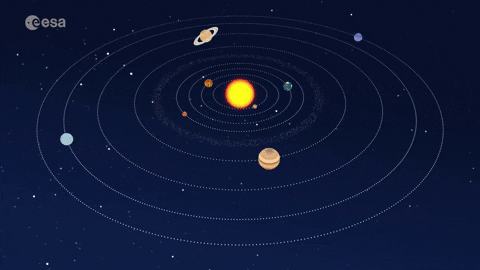

Solar System
The Solar System is the gravitationally bound system of the Sun and the objects that orbit it. It formed 4.6 billion years ago from the gravitational collapse of a giant interstellar molecular cloud. There are 8 planets in our Solar System. The four inner system planets are Mercury, Venus, Earth, and Mars are terrestrial planets. The four giant planets of the outer system are Jupiter, Saturn, Uranus, and Neptune.
Planets
Sun
The Sun is the star at the center of the Solar System. Its diameter is about 1.39 million kilometers (864,000 miles), or 109 times that of Earth. Its mass is about 330,000 times that of Earth, and it accounts for about 99,86% of the total mass of the Solar System. Its surface has a temperature of about 6000 degree Celcius, and it is by far the most important source of energy for life on Earth.
Explore MoreMercury
Mercury is the smallest planet in the Solar System and the closest to the Sun. Its orbit around the Sun takes 87.97 Earth days, the shortest of all the Sun's planets. It has the diameter of about 4.880 km. Its the first inner planet in the Solar System.
Explore MoreVenus
Venus is the second inner planet from the Sun. Its the brightest natural object in Earth's night sky, and can cast shadows visible to the naked eye in broad daylight. The diameter of Venus is 12.103 km, only 638.4 km less than Earth's diameter. Venus orbits the Sun every 224.7 Earth days.
Explore MoreEarth
Earth is the third inner planet from the Sun and the only astronomical object known to harbor life. About 71% of Earth's surface is water and 29% is land. Earth's atmosphere consists mostly of nitrogen and oxygen. Earth has the diameter of about 12.742 km, and orbits the Sun about 365.25 day or 1 Earth year.
Explore MoreMars
Mars is the fourth inner planet from the Sun and the second-smallest planet in the Solar System. Mars located before the Asteroid Belt, that divides inner planets and outer planets. It has the diameter of about 6.779 km, and Mars is the planet that might can be the second planet in the Solar System to harbor life.
Explore MoreJupiter
Jupiter is the fifth planet from the Sun and the largest in the Solar System. Its also the first Gas Giant planet and the first outer planets. Its called Gas Giant, because Jupiter is primarily composed of hydrogen. Jupiter mass is more than 2.5 times that of all the other planets in the Solar System combined. Jupiter has the diameter of about 139.820 km.
Explore MoreSaturn

Saturn is the sixth planet from the Sun and the second-largest in the Solar System, after Jupiter. Its the second Gas Giant planet and the second outer planets in the Solar System. Saturn most likely composed of a core of iron-nickel and rock (silicon and oxygen compounds). Saturn most notable feature is its prominent ring system. Saturn has the diameter of about 116.460 km.
Explore MoreUranus
Uranus is the seventh planet from the Sun and the third outer planets. Uranus and Neptune often classify as Ice Giants. As with gas giants, ice giant also lack a well defined solid surface.
Its atmosphere primarily composed of hydrogen and helium, but it contains more ices
such as water, ammonia, and methane, along with traces of other hydrocarbons. Uranus has the diameter of about 50.724 km.
Neptune
Neptune is the eighth and the farthest-known Solar planet from the Sun. It is referred to as one of the solar system's two ice giant planets. Its composed primarily of gases and liquids, it has no well-defined solid surface.
Its atmosphere is same as uranus, but its interior is primarily composed of ices and rock. Neptune has the diameter of about 49.244 km.
Pluto
Pluto is dwarf planet
in the Kuiper Belt, a ring of bodies beyond the orbit of Neptune. After Pluto was discovered in 1930, it was declared the ninth planet from the Sun. However, beginning in the 90s, its status as a planet was questioned following the discovery of several objects of similiar size in the Kuiper Belt and the scattered disc, including the dwarf planet Eris, leading the International Astronomical Union
(IAU) in 2006 to define the term planet formally excluding Pluto and reclassifying it as a dwarf planet.